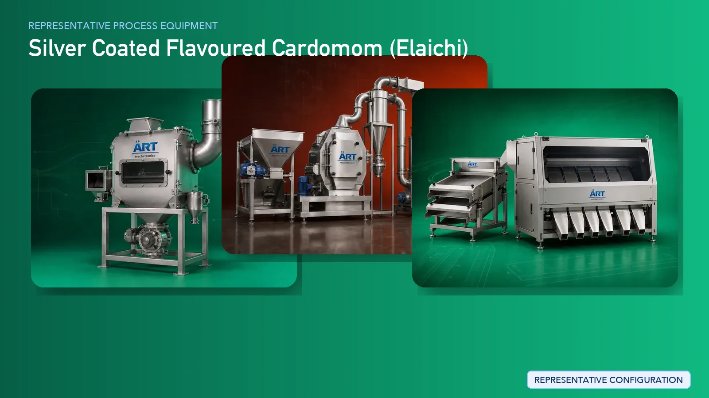

Silver Coated Elaichi (Cardamom) Processing Plant & Machinery Solutions
Silver coated elaichi (cardamom) is a premium mouth freshener product widely used in the FMCG and confectionery segments. Known for its aromatic flavor and attractive metallic finish, the product requires precision processing, hygienic handling, and uniform coating to maintain its premium appeal.

About Silver Coated Flavoured Cardomom (ELAICHI) processing
ART Mechatronics provides complete turnkey solutions for silver coated elaichi processing plants, offering advanced systems for cleaning, grading, coating, drying, polishing, and packaging. Our solutions are designed to ensure uniform coating quality, product safety, and high-end visual finish, suitable for large-scale commercial production.
Complete Silver Coated Elaichi Process Flow
Raw cardamom pods are cleaned to remove dust, foreign particles, and impurities.
Ensures hygienic and clean raw material for further processing.
Elaichi is graded based on size to ensure uniform coating and premium product consistency.
Uniform size improves coating efficiency and appearance.
The product is prepared for coating by ensuring dryness and surface readiness.
Edible silver coating is applied uniformly on the elaichi surface to achieve a premium metallic finish.
Ensures:
- Uniform coating
- High visual appeal
- Premium finish quality
The coated product is dried to stabilize the coating and enhance durability.
The coated elaichi is polished to enhance shine and final appearance.
Critical for achieving premium market look.
Final inspection is carried out to remove defective or non-uniform pieces.
Finished product is packed into pouches, jars, or premium containers using automated systems.
Suitable for high-speed FMCG packaging.
Machinery Required for Silver Coated Elaichi Plant
- Pre Cleaner
- Air Classifier
- Vibratory Grader
- Drying System
- Coating Pan / Coating Drum
- Spray System
- Polishing Drum
- Vibro Sifter
- Inspection Conveyor
- Packaging Machines
Turnkey Silver Coated Elaichi Plant Solutions
ART Mechatronics offers complete turnkey solutions including:
- Process design & plant layout
- Machinery manufacturing & integration
- Coating system design
- Automation & control panels
- Installation & commissioning
- After-sales service & support
We customize plants based on:
- Production capacity
- Coating type & finish quality
- Packaging format (pouch / jar / premium packs)
- Level of automation
Why Choose Art Mechatronics
- Expertise in premium coating and finishing processes
- Advanced coating and polishing technology
- Hygienic and controlled processing systems
- Custom-built machinery for FMCG products
- Global export capability
- Reliable after-sales support
Machinery in a Silver Coated Flavoured Cardomom (ELAICHI) plant
Where it's used
Get pricing & specs for the Silver Coated Flavoured Cardomom (ELAICHI) plant
Share the product, target capacity, current process and plant location. These details help our engineers discuss the right machine or line configuration.
One partner, from design to start-up
ART Mechatronics designs, manufactures, installs and commissions your Silver Coated Flavoured Cardomom (ELAICHI) solution with regional presence in India, UAE and Thailand.